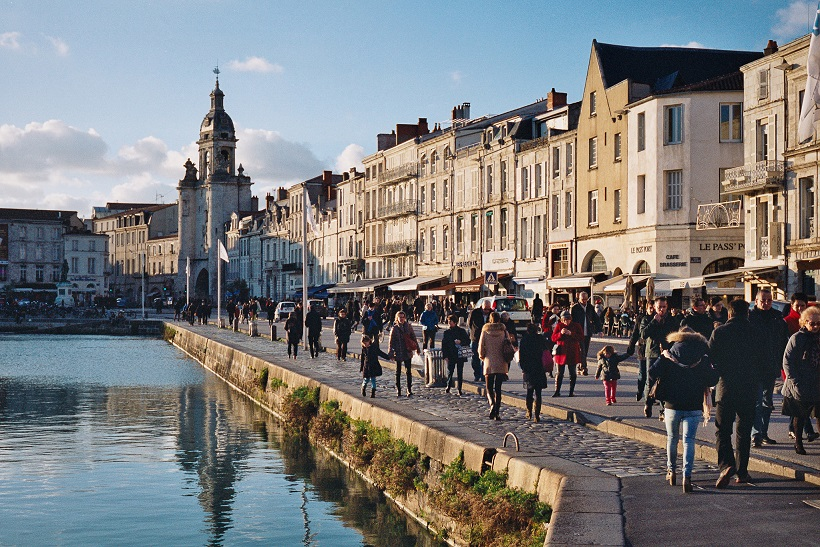
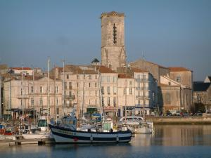
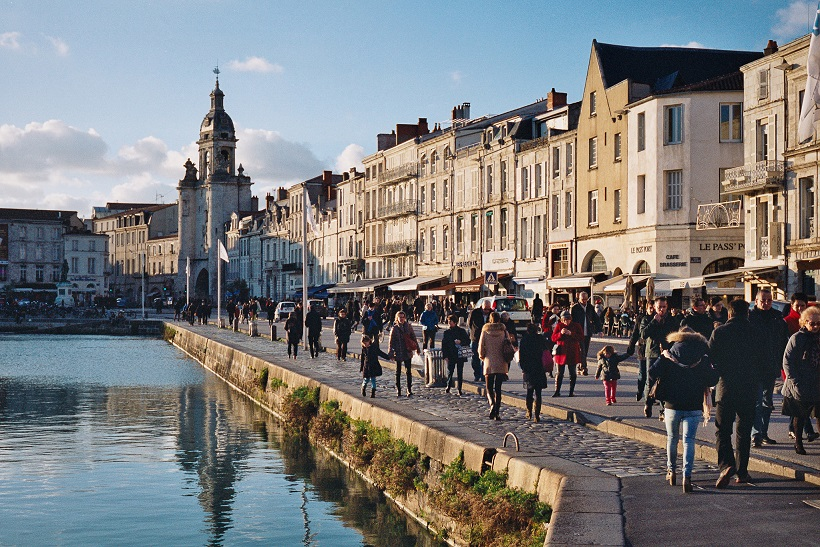
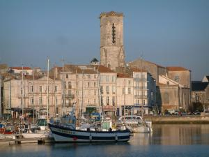
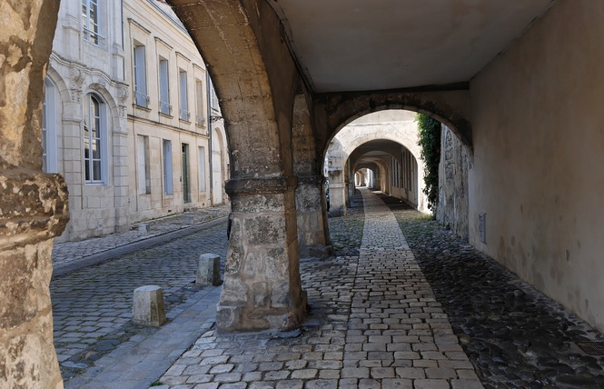
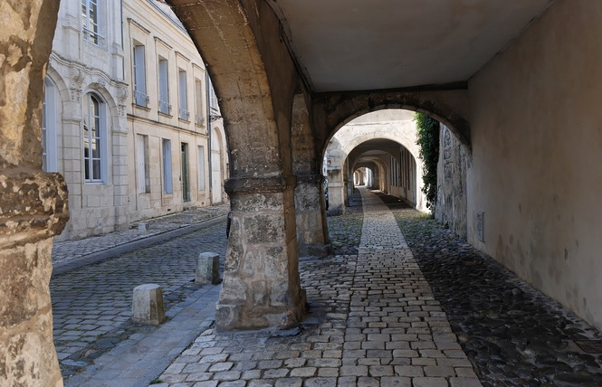
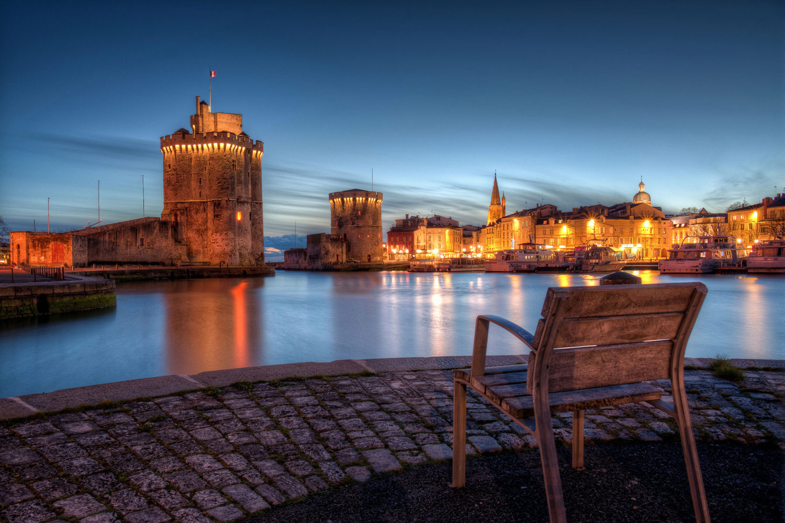
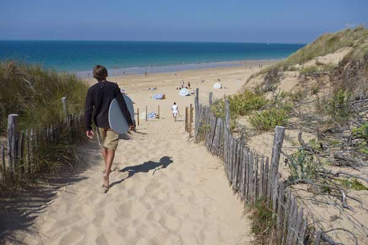
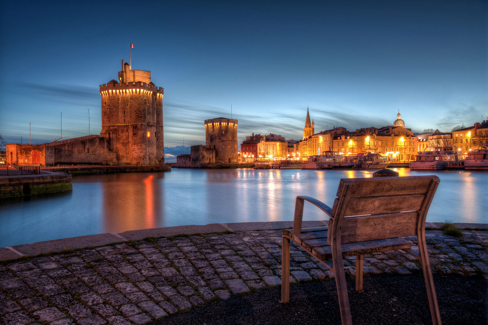
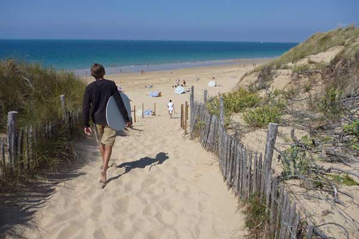

La Rochelle
Bienvenue à La Rochelle
La Rochelle est toute entière tournée vers la mer, à la manière des deux tours du Vieux Port qui en sont le symbole. Elle possède les avantages de la ville, avec son histoire ancienne, son architecture, ses commerces, ses nombreux restaurants, sa vie nocturne, et ceux de la station balnéaire avec les plages, le nautisme, les promenades en bord de mer... Dynamique, des évènements d'importance s'y déroulent, les Francofolies pour la musique, le Grand Pavois et ses navires. Calme également, il est toujours agréable de prendre un verre sur les quais, ou de partir bronzer à la plage.
Situé au fond d'une baie étroite, cet ancien port de pêche est gardé par deux tours médiévales, celle de laChaîne et celle deSaint-Nicolas . Cette vue la plus célèbre de la cité fut immortalisée par les peintresJoseph Vernet, Corot, Signac . Aujourd'hui, le Vieux Port est uniquement dédié aux navires de plaisance. Depuis 2015, ses abords sont quant à eux réservés aux piétons et aux cyclistes.
Les lieux à visiter
-
Vieux Port
La Rochelle, c'est avant tout le Vieux Port. C'est grâce à celui-ci que la ville s'est développée à partir du Moyen-Age. Il a été le théâtre du siège orchestré par Richelieu contre cette ville protestante en 1627-28, ou encore un acteur tristement important du commerce triangulaire. rnAujourd'hui, le port se consacre à la plaisance : la promenade autour du bassin change de physionomie selon la saison, la marée, l'heure de la journée... rnLe quai Duperré est une succession de cafés et bistrots dont les terrasses bondées les jours de beau temps offrent une vue imprenable sur les deux tours emblématiques qui marquent la sortie du port. Les prix des consomations s'en ressentent mais la qualité est bien là. Le quai est fermé à la circulation le dimanche, le rendant bien plus agréable dans une atmosphère de détente absolue.rnLe cours des Dames, ombragé grâce à ses arbres, parsemé de bancs, est parcouru par des promeneurs tranquilles. Des artistes de rue, dresseur de chien, peintres, proposent des animations quasiment toute l'année. Restaurants de fruits de mer et cinéma en sont les activités nocturnes.rnDe l'autre côté du bassin, quai du Carénage, un vieux manège amusera les enfants tandis que quelques vieux navires mouillent vers la tour Saint-Nicolas.
-
La Tour de la Chaîne
La tour de la Chaîne, la plus petite des deux tours du Vieux Port de La Rochelle, date du XIVe siècle : elle servait d'attache à la chaîne qui barrait l'accès du port. Cette chaîne est aujourd'hui conservée au pied de la tour. Une exposition s'y déroule depuis 2008, "La Rochelle - Québec : embarquez vers la Nouvelle France". Le prix du billet d'entrée donne droit à visiter également la tour Saint-Nicolas. Avec la tour Saint-Nicolas, la tour de la Chaîne est l'élément clef de la défense du Vieux port de La Rochelle. Construite dans les années 1370-1380, après la tour Saint-Nicolas, elle se composait en fait de deux tours. La plus petite abrite un cabestan permettant de tendre une chaîne ancrée dans la tour Saint-Nicolas et ainsi de fermer l'entrée du Vieux port. Elle était reliée par une galerie couverte à la seconde, plus grande, destinée à abriter la garnison. Comme la tour Saint-Nicolas, la tour de la Chaîne fut endommagée pendant la fronde et perdit alors sa toiture et son chemin de ronde. La petite tour fut détruite en 1827, lors de l'élargissement de l'entrée du port.
-
Les Halles de La Rochelle
En plein coeur de la vieille ville, la place du marché de La Rochelle est un lieu fourmillant d'activité les mercredi, samedi et dimanche matin, jours de grand marché. Les halles, bâtiment datant du XIXe siècle, couvrent les étales qui proposent tous les produits du terroir régional, dont bien évidemment les produits de la mer. Les poissoniers n'hésitent pas à hausser la voie et à baisser les prix avant de remballer, vers 14 heure. La place du marché est entourée de maisons anciennes à colombage, de petits commerces, et de plusieurs cafés dont les terrasses exposées au soleil attirent toujours une clientèle hétéroclite et décontractée.
-
Au 33 rue Thiers
Dans un ancien hôtel particulier du vieux centre de La Rochelle, "Au 33 rue Thiers" est une maison d'hôte ouverte toute l'année. 5 minutes de marche la sépare du marché couvert ou du vieux port : autant dire au coeur de la ville. Six suites indépendantes, aux décors variés selon leurs thèmes, sont réparties sur les trois étages de cette bâtisse datant de 1745. On peut prendre le petit déjeuner, fait maison, dans le jardin intérieur pour profiter du soleil ou autour de la grande table de la salle à manger, pour faire connaissance avec les autres résidents et les hôtes eux-même. On appréciera le côté "chez soi" qu'offre un séjour ici, histoire de changer des hôtels trop souvent impersonnels.
-
Le Musée Maritime
A côté de l'Aquarium, situé dans le bassin des Chalutiers se trouve le Musée Marirtime de La Rochelle. Le musée gère une flotte de huit navires : le plus remarquable, le France 1, est un ancien navire météorologique. La visite vous entraine jusque dans les salles des machines, les cabines, le poste de pilotage. On peut églement visiter l'Angoumois, un ancien chalutiers, ou voir le Joshua, voilier de 12 mètres qui a servi au navigateur et écrivain Bernard Moitessier à faire le premier tour du monde sans escale et en solitaire. rnOuvert d'avril à septembre.
-
Rue Saint-Nicolas
La rue Saint-Nicolas, ancien repère de marins, est parcourue de nombreux bars qui s'anîment le soir d'une clientèle principalement étudiante.rnVéritable institution de La Rochelle, la Guignette est une cave à vin qui a su garder son décor dépouillé et chaleureux de vieil établissement. On y boit des spécialités de vins mélangés attablé à un tonneau, dans une ambiance surchargée et festive entre 18H et la fermeture à 20H. Autrefois bon marché, on ne peut malheureusement plus en dire la même chose aujourd'hui.rnOn notera le marché aux puces qui se déroule dans toute la rue ainsi que sur la place de la Fourche, dite de 'l'arbre magique", le samedi matin.
-
Pars Charruyer
Le parc Charruyer est plus communément appelé par les Rochelais "les Parcs". Le parc occupe l'ancien emplacement des remparts ouest de la ville. Il est traversé dans sa longueur par un petit cours d'eau habité par des canards et des cygnes que nourrissent les passants, sans oublier les ragondins, moins plaisants. Des plaques explicatives donnent des renseignements sur les nombreuses espèces d'arbres. Tout le parc est doté de pistes cyclables. La promenade vaut la peine si l'on recherche le calme. A noter, pour les enfants, la partie "zoo", où les charmants bambins peuvent nourrir les chèvres, les ânes ou les oies, ainsi que monter sur des poneys. Comme dans nombre de villes françaises, la destruction de l'enceinte de La Rochelle, au début du XIXe siècle, laissa de vastes espaces vides entre ville et faubourgs, longtemps laissés à l'abandon. C'est un don de Mademoiselle Charruyer, à la fin du XIXe siècle, qui permit d'aménager le vaste jardin paysagé qui forme le parc Charruyer. Animé par deux ruisseaux se jetant dans la mer, c'est un joli parc tout en longueur, aménagé à l'anglaise, avec des sentiers sinueux abrités par les arbres.
-
Tour Saint-Nicolas
La tour Saint-Nicolas est la plus massive des deux tours qui gardent l'entrée du Vieux Port de La Rochelle. Edifiée afin de protéger le port de tout danger venu de la mer, la tour Saint-Nicolas était reliée par une chaine bloquant l'accès du bassin à sa voisine plus petite, la tour de la Chaine. La visite de ce donjon austère et gothique, datant du XIVe siècle, vous fera traverser de grandes salles de pierres reliées par des escaliers serrés et parfois abruptes, basés sur un plan de communication complexe. Mais l'ascencion des 42 mètres de l'édifice vaut le détour pour le magnifique panorama observable de son sommet, sur toute l'étendue de la ville et bien sûr l'océan.rnLa tour est ouverte tous les jours de la semaine, pour une visite qui durera environ une heure. Construite à partir de 1345 environ, la tour Saint-Nicolas ferme le port de la Rochelle. Elle s'appuie sur un radier destiné à compenser la nature marécageuse du terrain. Les travaux s'étant interrompus pendant la période de l'occupation anglaise (1360-1372), elle ne fut achevée qu'en 1376. Elle se composait à l'origine de quatre grandes salles superposées recouvertes d'un toit en poivrière, mais le niveau supérieur fut détruit pendant la Fronde.
-
Le café des Deux Tours
En plein sur le Vieux Port, le café des 2 Tours propose une terrasse en plein soleil très agréable. Moins fréquenté que les terrasses bondées des cafés du quai Duperré, moins cher aussi, l'ambiance y est totalement détendue, la clientèle hétéroclite. On peut aussi manger le plat du jour, cuisine de bistrot simple mais bonne. Des petits concerts sont parfois organisés le weekend. Un endroit parfait pour prendre l'apéro tout en regardant le soleil se coucher derrière les tours du port de La Rochelle.
-
La Grosse Horloge
Ancienne porte de la ville, elle fait la jonction entre le Vieux Port et le centre ville commerçant et piéton. Le massif monument est mis en valeur par un jeu de projecteurs la nuit. La Grosse Horloge ne se visite que lors des journées du patrimoine, mais une tablette explicative retrace son histoire qui remonte au XIVe siècle.
Découvrez la beauté de La Rochelle

 



 

 


